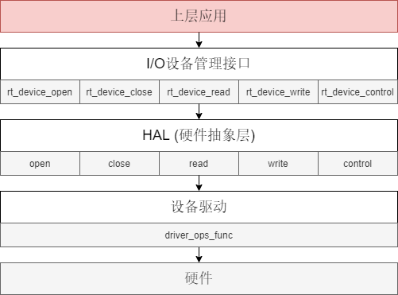
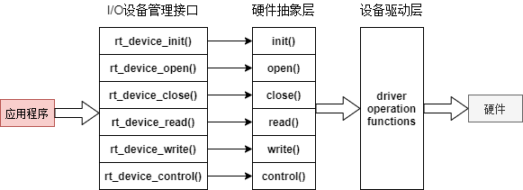
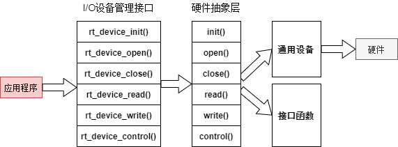

设备和驱动
绝大部分的嵌入式平台都包括一些 I/O (Input/Output, 输入/输出) 设备，例如飞控硬件上的串口通信、惯性传感器、USB 以及 SD 卡等。这些设备为系统上层的应用提供相关硬件的 I/O 功能。
本章主要介绍 Firmament 的 I/O 设备和驱动框架，包括如何访问 I/O 设备以及如何向系统中添加新的I/O设备或者驱动。
设备和驱动框架
Firmament 提的 I/O 设备模型框架，如下图所示。它位于硬件和应用程序之间，共分成三层，从上到下分别是 I/O 设备管理层、硬件抽象层 (HAL)、设备驱动层。

应用程序通过 I/O 设备管理接口获得正确的设备驱动，然后通过这个设备驱动与底层 I/O 硬件设备进行数据（或控制）交互。
I/O 设备管理层为 RT-Thread 提供的设备访问接口。应用程序通过 I/O 设备层提供的标准接口访问底层设备。这里的底层设备既可以是硬件抽象层的通用设备或者虚拟设备，也可以是设备驱动层的普通设备。
硬件抽象层是对平台通用设备 （如串口设备、SPI 设备、I2C 设备和 PIN 设备等） 驱动的抽象，目的是为不同型号的硬件设备提供统一的上层接口。把与硬件无关的驱动逻辑放在该层实现，可以简化驱动开发的难度。同时，这种方式使得设备的硬件操作相关的代码能够独立于应用程序而存在，设备驱动程序的升级、更替不会对上层应用产生影响，从而降低了代码的耦合性、复杂性，提高了系统的可靠性。
设备驱动层提供驱动硬件设备的程序，与硬件直接打交道。驱动要能够被上层使用，需要将自己注册为通用设备或者驱动设备。
通用设备
通用设备是指包含了硬件抽象层和设备驱动层的 I/O 设备, 为各硬件所通用的通用设备。对于 Pixhawk 来说，通用设备一般包括串口, PIN, I2C, SPI, USB, SD 卡, 电机, RC, 加速度计, 陀螺仪, 磁力计, GPS , 气压计, 定时器和系统时钟等。
通用设备由底层驱动程序程序首先注册为硬件抽象层的抽象设备，然后抽象层再向系统注册为设备。通用设备的操作方法的映射关系下图所示：

其中 driver_ops 为硬件抽象层定义的各个驱动设备的功能函数 (operation functions)。 驱动程序需要实现对应的功能函数，并将其注册为对应的通用设备。
普通设备
普通设备是指不包含硬件抽象层，由驱动层的设备程序直接向系统注册的设备。普通设备没有对应的硬件抽象层的通用设备，所以普通设备用于某个硬件平台所特有的硬件，比如 Pixhawk 上的三色 LED 灯。驱动设备的操作方法的映射关系下图所示：

虚拟设备
虚拟设备是一种比较特殊的设备，具有很大的灵活性。不同于通用设备和普通设备，它构建于通用设备或者其它模块提供的接口函数之上。 虚拟设备的操作方法的映射关系下图所示：

Firmament 中包含了许多的虚拟设备，为系统提供了很大的灵活性。比如mav_console设备，提供了将控制台消息通过 mavlink 协议发送的功能。mav_console 在 HAL 层实现了将数据封装为 mavlink 数据包的逻辑， 然后通过 serial 或者 usb 设备发送数据。
访问 I/O 设备
当设备被注册到系统后，上层应用就通过 I/O 设备管理接口来访问该设备（通用设备，普通设备或者虚拟设备）。
首先通过设备名称来获取设备句柄，进而可以操作设备。查找设备函数如下所示：
rt_device_t rt_device_find(const char* name);
获得设备设备句柄后，可以打开和关闭设备。打开设备时，会检测设备是否已经初始化，没有初始化则会默认调用初始化接口初始化设备。通过如下函数打开设备：
rt_err_t rt_device_open(rt_device_t dev, rt_uint16_t oflags);
上层应用打开设备完成读写等操作后，如果不需要再对设备进行操作则可以关闭设备，通过如下函数完成：
rt_err_t rt_device_close(rt_device_t dev);
从设备中读/写可以通过如下函数完成：
rt_size_t rt_device_read(rt_device_t dev, rt_off_t pos,void* buffer, rt_size_t size);
rt_size_t rt_device_write(rt_device_t dev, rt_off_t pos,const void* buffer, rt_size_t size);
pos 根据不同的设备类别有不同的意义，具体含义需查看对应设备的头文件定义。
通过命令控制字，上层可以对设备进行控制，通过如下函数完成：
rt_err_t rt_device_control(rt_device_t dev, rt_uint8_t cmd, void* arg);
cmd 根据不同的设备类别有不同的意义，具体含义需查看对应设备的头文件定义。
添加 I/O 设备
要添加一个 I/O 设备到 Firmament系统中，首先要考虑添加设备的类型是通用设备、普通设备还是虚拟设备。不同设备的添加方式会略有不同。这里以添加一个加速度计设备为例来演示如何添加设备到 Firmament 系统中。
因为加速度计设备为各个飞控平台共有的设备，所以可以确定其为通用设备。HAL 层已经实现了加速度计抽象层的逻辑，所有只需要提供一个驱动程序 (如果没有则需要自己实现)，并实现accel.h中所定义的driver_ops驱动功能函数，然后注册为accel通用设备即可完成设备的添加。
加速度计设备的驱动功能函数定义如下：
/* accel driver opeations */
struct accel_ops {
rt_err_t (*accel_config)(accel_dev_t accel, const struct accel_configure* cfg);
rt_err_t (*accel_control)(accel_dev_t accel, int cmd, void* arg);
rt_size_t (*accel_read)(accel_dev_t accel, rt_off_t pos, void* data, rt_size_t size);
};
驱动需要实现accel_config函数来配置加速度计的参数，其中accel_configure包括的配置如下：
struct accel_configure {
rt_uint32_t sample_rate_hz;
rt_uint16_t dlpf_freq_hz;
rt_uint32_t acc_range_g;
};
其中sample_rate_hz为采样频率，dlpf_freq_hz为硬件低通滤波截至频率，acc_range_g为测量的加速度范围 。mpu6000.c中的配置函数实现如下：
static rt_err_t accel_config(accel_dev_t accel, const struct accel_configure* cfg)
{
rt_err_t ret = RT_EOK;
if (cfg == RT_NULL) {
return RT_EINVAL;
}
ret |= _set_accel_range(cfg->acc_range_g);
ret |= _set_sample_rate(cfg->sample_rate_hz);
ret |= _set_dlpf_filter(cfg->dlpf_freq_hz);
accel->config = *cfg;
return ret;
}
第二个要实现的函数是accel_control，该函数可以用来给驱动设备传输一些指令。目前accel还没有定义相关的指令，所以驱动的函数直接返回成功即可:
static rt_err_t accel_control(accel_dev_t accel, int cmd, void* arg)
{
return RT_EOK;
}
最后一个要实现的函数是accel_read，其用来读取加速度计的数据。这里的pos有两个定义，分别为读取加速度计原始数据和标准化单位 ( m/s2 ) 的数据。
/* accel read pos */
#define ACCEL_RD_RAW 1
#define ACCEL_RD_SCALE 2
具体的读取加速度计数据函数实现如下：
static rt_size_t accel_read(accel_dev_t accel, rt_off_t pos, void* data, rt_size_t size)
{
if (data == RT_NULL) {
return 0;
}
if (pos == ACCEL_RD_RAW) {
if (mpu6000_acc_read_raw(((int16_t*)data)) != RT_EOK) {
return 0;
}
} else if (pos == ACCEL_RD_SCALE) {
if (mpu6000_acc_read_m_s2(((float*)data)) != RT_EOK) {
return 0;
}
} else {
DRV_DBG("accel unknow read pos:%d\n", pos);
return 0;
}
return size;
}
然后在驱动的初始化函数中调用accel.h的接口将自己注册为accel设备：
rt_err_t mpu6000_drv_init(char* spi_device_name)
{
rt_err_t ret = RT_EOK;
static struct accel_device accel_dev = {
.ops = &_accel_ops,
.config = ACCEL_CONFIG_DEFAULT,
.bus_type = GYRO_SPI_BUS_TYPE
};
static struct gyro_device gyro_dev = {
.ops = &_gyro_ops,
.config = GYRO_CONFIG_DEFAULT,
.bus_type = GYRO_SPI_BUS_TYPE
};
spi_device = rt_device_find(spi_device_name);
if (spi_device == RT_NULL) {
DRV_DBG("spi device %s not found!\r\n", spi_device_name);
return RT_EEMPTY;
}
/* config spi */
{
struct rt_spi_configuration cfg;
cfg.data_width = 8;
cfg.mode = RT_SPI_MODE_3 | RT_SPI_MSB; /* SPI Compatible Modes 3 */
cfg.max_hz = 3000000;
struct rt_spi_device* spi_device_t = (struct rt_spi_device*)spi_device;
spi_device_t->config.data_width = cfg.data_width;
spi_device_t->config.mode = cfg.mode & RT_SPI_MODE_MASK;
spi_device_t->config.max_hz = cfg.max_hz;
ret |= rt_spi_configure(spi_device_t, &cfg);
}
/* driver internal init */
ret |= _init();
/* register gyro hal device */
ret |= hal_gyro_register(&gyro_dev, "gyro0", RT_DEVICE_FLAG_RDWR, RT_NULL);
/* register accel hal device */
ret |= hal_accel_register(&accel_dev, "accel0", RT_DEVICE_FLAG_RDWR, RT_NULL);
return ret;
}
这里hal_accel_register即为注册accel设备的接口，accel0为设备名称，上层应用通过该名称来获取设备句柄。mpu6000 包括一个陀螺仪和一个加速度计，所以这里除了注册加速度计设备外，还注册了一个陀螺仪设备。
Firmament 默认使用
gyro0和accel0作为系统的主 IMU，gyro1和accel1作为副 IMU。 所以如果要使用某个 IMU 设备作为主 IMU，将其注册为gyro0和accel0即可。